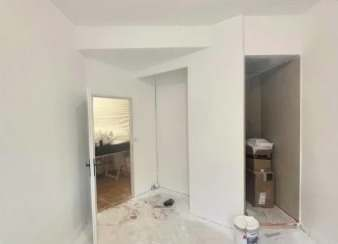
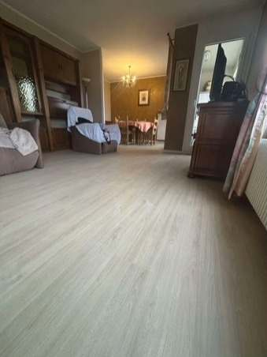

NOS SERVICES
ADN Multiservices est une entreprise spécialisée dans la rénovation intérieure et extérieure. Nous proposons des services complets allant de la rénovation complète à la peinture intérieure et extérieure, en passant par le placo-plâtre, le stucco vénitien, le ravalement de façade et le revêtement de sols, pour répondre à tous vos besoins en matière de rénovation. Faites confiance à notre expertise et notre savoir-faire pour transformer votre espace de vie selon vos envies.
Stucco vénitien sur mesure
Rénovez vos murs avec un enduit décoratif poli à la main, à l'effet marbre : couleurs, veinages, motifs et brillance 100 % personnalisables, pour des murs, cheminées et colonnes uniques.
Rénovation complète
Nous prenons en charge la rénovation complète de votre appartement ou de votre maison : cloisons en placo-plâtre, enduits, peinture, revêtements de sol et finitions, avec un seul interlocuteur.

Peinture intérieure
La peinture intérieure est un moyen efficace pour rafraîchir et personnaliser son intérieur.
Placo-plâtre et enduit
Pose de cloisons et de plafonds en placo-plâtre, doublages, bandes et enduits, ponçage et préparation des supports avant peinture ou revêtement.

Revêtement de sol
Le revêtement de sol est un élément essentiel de la décoration intérieure d'une maison.
Ravalement de façade
Nettoyage, réparation des fissures, enduit, peinture ou bardage : nous redonnons de l'éclat à vos façades et les protégeons durablement.
Peinture extérieure
Façades, volets, sous-faces de toit, boiseries et bardages : protection et embellissement avec des peintures adaptées aux intempéries.
Rénovation de salle de bain
Murs et plafonds, revêtements adaptés aux pièces d'eau, peinture et finitions : nous rénovons votre salle de bain ou votre WC. Voir nos avant/après.
Remise en état après dégât des eaux
Préparation du support, enduit, ponçage puis peinture ou revêtement sur les murs et plafonds abîmés.
Vitrification de parquet
Ponçage et vitrification pour redonner de l'éclat à votre parquet et le protéger durablement.